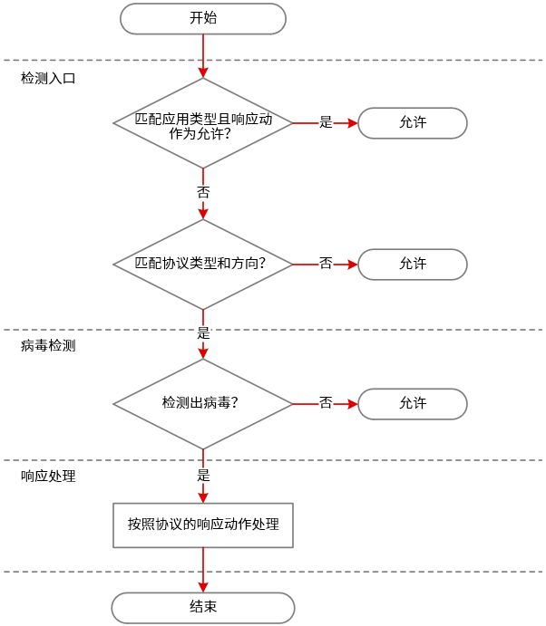
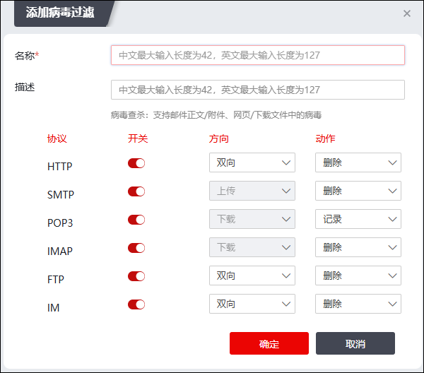

病毒是一种恶意代码，可感染或附着在应用程序或文件中，通过邮件或文件共享等协议进行传播；病毒会消耗主机资源、控制主机权限并占用网络带宽，还可能对主机硬件造成破坏，从而威胁用户主机和网络的安全。一旦进入网络内部，病毒就会很快地在网络环境中传播，造成整个网络的阻塞，甚至瘫痪；网络病毒已被公认为网络安全的最主要威胁之一。为了解决这一问题，NGFW配置了病毒过滤功能，防止病毒文件通过网关设备进入受保护网络。
病毒过滤是对应用层数据的过滤，能够对通过HTTP/FTP传输的文件、使用SMTP/POP3协议传送的邮件附件以及通过即时通讯软件向用户发送的恶意文件进行准确识别，并可根据文件扩展名选择过滤的附件类型，对识别出的病毒文件按照预定义的响应措施做出相应处理，使病毒文件在进入受保护网络之前即被干预处理。同时，病毒过滤功能支持自定义配置，管理员可以根据企业网络的具体使用情况来配置各种协议的病毒过滤策略。NGFW的病毒过滤功能支持的协议主要有HTTP、FTP、POP3、SMTP、IMAP和IM。另外NGFW还支持支持基于SSL解密的代理杀毒，需要同时配置SSL解密策略，才会进入代理杀毒模块，对SSL解密后的流量进行病毒查杀。
在系统的访问控制规则中，管理员可以指定是否对满足这条规则的网络数据进行病毒过滤。当系统的某条规则放行来自某个地址段访问病毒过滤支持的协议服务的数据流通过，并且启动了病毒过滤引擎时，就会截取该数据流，并按照该协议过滤策略调用杀毒引擎对传输的网络文件进行病毒过滤。关于访问控制规则的设置具体请参见 配置访问控制规则。
病毒过滤的处理流程分为三步：检测入口，病毒检测和响应处理，具体说明如下表所示。
步骤 |
说明 |
|---|---|
检测入口 |
判断目标：文件是否需要做病毒检测。 判断条件：传输文件的应用类型；传输文件的协议类型和文件传输方向。 |
病毒检测 |
判断目标：文件中是否包含病毒。 判断条件：文件扫描结果；病毒特征库。 |
响应处理 |
判断目标：如何处理病毒文件。 判断条件：协议中定义的响应动作。 |
具体流程如下图所示。

| 步骤1 | 选择 。 |
| 步骤2 | 点击“添加”，弹出“添加病毒过滤”窗口，如下图所示。 |

在设置病毒过滤规则时，各项参数的具体说明如下表所示。
参数 |
说明 |
|---|---|
名称 |
必填项，设置病毒过滤规则的名称。 |
描述 |
设置病毒过滤规则的具体说明。描述信息可以方便管理员区分不同的病毒过滤规则的功能。 |
HTTP |
超文本传输协议。设置基于HTTP协议的病毒过滤规则的执行方向和动作。方向可选项：双向、上传、下载，动作可选项：删除、记录，默认选项：删除。 |
SMTP |
简单邮件传输协议。设置基于SMTP协议的病毒过滤规则的执行方向和动作。文件传输方向可选项：上传，响应动作可选项：删除、记录，默认选项：删除。 |
POP3 |
邮件协议的第3个版本。设置基于POP3协议的病毒过滤规则的执行方向和动作。文件传输方向可选项：下载，响应动作可选项：记录。 |
IMAP |
邮件协议。设置基于IMAP协议的病毒过滤规则的执行方向和动作。文件传输方向可选项：下载，响应动作可选项：删除、记录，默认选项：删除。 |
FTP |
文件传输协议。设置基于FTP协议的病毒过滤规则的执行方向和动作。文件传输方向可选项：双向、上传、下载，响应动作可选项：删除、记录，默认选项：删除。 |
IM |
即时通讯协议。设置基于IM协议的病毒过滤规则的执行方向和动作。文件传输方向可选项：双向、上传、下载，响应动作可选项：删除、记录，默认选项：删除。 |
|
²文件传输方向：双向、上传和下载指文件的传输方向，是NGFW判断文件是否需要做病毒过滤检测的重要依据。其中，“上传”指文件从客户端向服务器发送，“下载”指文件从服务器向客户端发送。 ²响应动作包括：删除、记录。“删除”是指删除带病毒的文件；“记录”是指对该文件不做任何处理，只是记录日志。关于病毒日志的查看请参见 日志查看。 |

| 步骤3 | 点击【确定】按钮完成病毒过滤规则的添加。病毒过滤规则配置完成后，点击“操作”列的“编辑”可以修改规则，点击“删除”可删除规则。勾选规则，点击列表左上角的“编辑/克隆/删除/更多-清空”，可修改/复制/删除/清空病毒过滤规则。 |